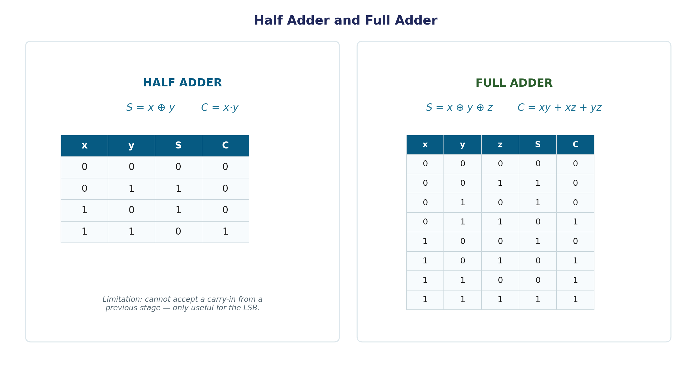
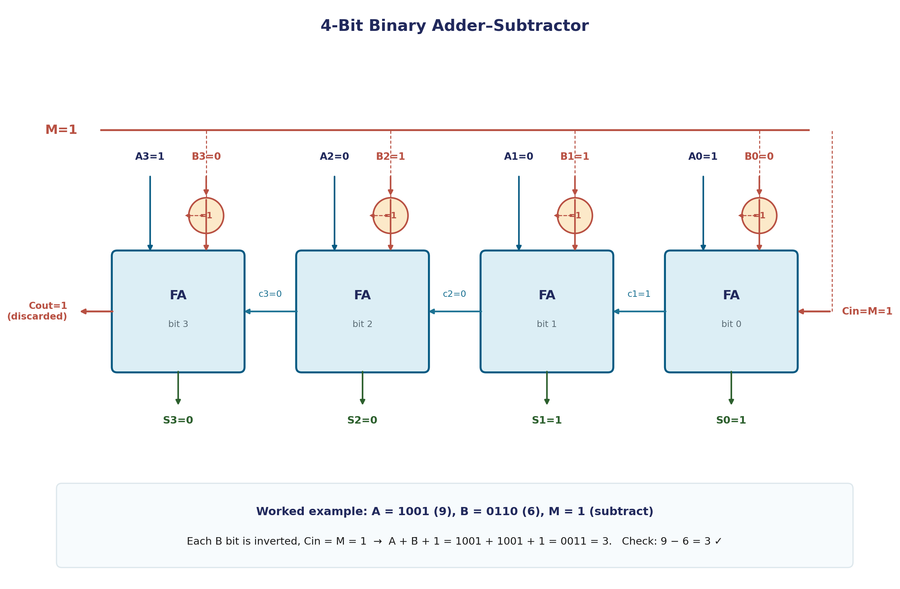

Binary Adder & Subtractor
Addition is the one operation every other arithmetic operation in a computer ultimately reduces to — subtraction, multiplication, even comparison all lean on it, directly or indirectly. This page builds addition from the ground up: a single-bit half adder, a chainable full adder, a complete multi-bit binary adder, and — using the 2's complement representation from Unit 1 — a combined adder-subtractor that does both jobs with almost no extra hardware.
Half Adder
A half adder is a combinational circuit that adds two single bits, producing a sum bit and a carry bit.
S = x ⊕ y C = x · y
| x | y | S | C |
|---|---|---|---|
| 0 | 0 | 0 | 0 |
| 0 | 1 | 1 | 0 |
| 1 | 0 | 1 | 0 |
| 1 | 1 | 0 | 1 |
The name is deliberate: it's only "half" the job. A half adder has no way to accept a carry-in from a previous, less-significant bit position — which makes it usable only for the very lowest bit of a multi-bit addition, where there's genuinely nothing to carry in from.
Full Adder
A full adder fixes exactly that gap: it's a combinational circuit that adds three bits — two significant bits (x, y) plus a carry-in (z) from the previous position — producing a sum and a carry-out.
S = x ⊕ y ⊕ z C = xy + xz + yz
| x | y | z | S | C |
|---|---|---|---|---|
| 0 | 0 | 0 | 0 | 0 |
| 0 | 0 | 1 | 1 | 0 |
| 0 | 1 | 0 | 1 | 0 |
| 0 | 1 | 1 | 0 | 1 |
| 1 | 0 | 0 | 1 | 0 |
| 1 | 0 | 1 | 0 | 1 |
| 1 | 1 | 0 | 0 | 1 |
| 1 | 1 | 1 | 1 | 1 |
The carry expression C = xy + xz + yz is worth noticing as a pattern in its own right: it's 1 whenever at least two of the three inputs are 1 — a "majority" function. This is a clean, general way to remember it instead of memorizing the truth table row by row.
A full adder can be built from two half adders plus an OR gate: the first half adder combines x and y, the second combines that partial sum with the carry-in z, and the two half-adders' carry outputs are OR-ed together for the final carry. Building it this way is a good exercise in seeing how larger combinational blocks reuse smaller ones.

Binary Adder — Chaining Full Adders
A binary adder produces the arithmetic sum of two full binary numbers, not just single bits. It's built by connecting full adders in a chain: the carry-out of each stage feeds directly into the carry-in of the next, more-significant stage. This structure is called a ripple carry adder, because a carry generated at the least-significant bit can, in the worst case, "ripple" all the way through every stage up to the most-significant bit before the final result is stable.
Adding two n-bit numbers requires exactly n full adders (or one half adder for the LSB, where there's genuinely no carry-in, plus n−1 full adders for the rest).
Worked Example — 4-Bit Addition
Add A = 1001₂ (9) and B = 0110₂ (6) using a 4-bit ripple carry adder, working right to left (LSB first):
Bit position: 3 2 1 0 A: 1 0 0 1 B: 0 1 1 0 Carry-in: 1 1 0 0 (each stage's carry becomes next stage's carry-in) Sum: 1 1 1 1 Final carry-out: 0
Result: 1111₂ = 15, and indeed 9 + 6 = 15. ✓
Binary Subtractor
Subtraction (A − B) has its own natural full-adder-like building block: a full subtractor computes the difference of three bits (a minuend bit, a subtrahend bit, and a borrow-in), producing a difference bit and a borrow-out.
D = x ⊕ y ⊕ z B = x′y + x′z + yz
Notice the difference equation is identical in form to the full adder's sum equation — XOR doesn't care whether you're framing it as "carry" or "borrow." The borrow equation differs from the carry equation only in that x is complemented — worth comparing side by side with the full adder's carry expression above.
Combined Adder–Subtractor
Building separate adder and subtractor circuits is wasteful — Unit 1 already showed that 2's complement turns subtraction into addition (A − B = A + B′ + 1), and that same trick lets one circuit do both jobs.
Take a chain of full adders (an ordinary binary adder), and insert one XOR gate in front of each B input, with all those XOR gates sharing a single common control line, M:
- M = 0: each XOR gate passes B through unchanged (B ⊕ 0 = B), and M also feeds the carry-in of the first stage as 0. The circuit computes A + B — ordinary addition.
- M = 1: each XOR gate inverts every bit of B (B ⊕ 1 = B′), and M feeds the first stage's carry-in as 1. The circuit computes A + B′ + 1, which is exactly A − B in 2's complement.

Worked Example — Same Hardware, Both Operations
Let A = 1001₂ (9), B = 0101₂ (5):
M = 0 (add): B passes through unchanged. 1001 + 0101 = 1110₂ = 14. Check: 9 + 5 = 14. ✓
M = 1 (subtract): B is inverted to 1010, and carry-in = 1. 1001 + 1010 + 1 = 1 0100₂ → drop the overflow carry → 0100₂ = 4. Check: 9 − 5 = 4. ✓
Same four full adders, same four XOR gates, same wiring — only the single control bit M changed.
Decimal (BCD) Adder
Adding two BCD digits with an ordinary 4-bit binary adder works correctly only when the true decimal sum is 9 or less — because BCD only uses the bit patterns 0000 through 1001 (recall from Unit 1's Binary Codes page: 1010–1111 are invalid in BCD). When the sum exceeds 9, the raw binary result lands in that invalid range and needs correcting.
The correction rule: if the 4-bit binary sum is greater than 9, or a carry-out was generated, add 6 (0110) to the result. This pushes the invalid 6-bit-pattern gap out of the way and produces the correct carry into the next decimal digit position.
Worked Example — 7 + 8 in BCD
0111 (7) + 1000 (8) ------ 1111 = 15 in plain binary — but 15 > 9, so correction is needed 1111 + 0110 (add 6 to correct) ------ 1 0101 → carry = 1 (tens digit), remaining nibble = 0101 = 5 (units digit) Result: "1" and "5" → 15 in BCD, correctly split across two decimal digit positions.
Common Pitfalls
- A half adder cannot be chained directly — it has no carry-in input at all. Multi-bit addition needs full adders for every position except (optionally) the very first.
- BCD addition needs the +6 correction whenever the binary result is invalid or overflows — skipping this check silently produces a bit pattern that isn't valid BCD.
- In the combined adder-subtractor, M must feed both the XOR gates and the first-stage carry-in — wiring M to only the XOR gates (forgetting the carry-in) computes A + B′ instead of A + B′ + 1, which is off by one from the correct subtraction result.
Applications
- Every ALU you'll encounter in this course's later units builds its addition/subtraction hardware from exactly this adder-subtractor pattern.
- Calculators and embedded systems with decimal displays use BCD adders directly, since converting to and from binary for every display update would be wasteful.
- Checksum and parity computations in networking hardware often reuse binary adder circuits, since a checksum is fundamentally a repeated addition operation.